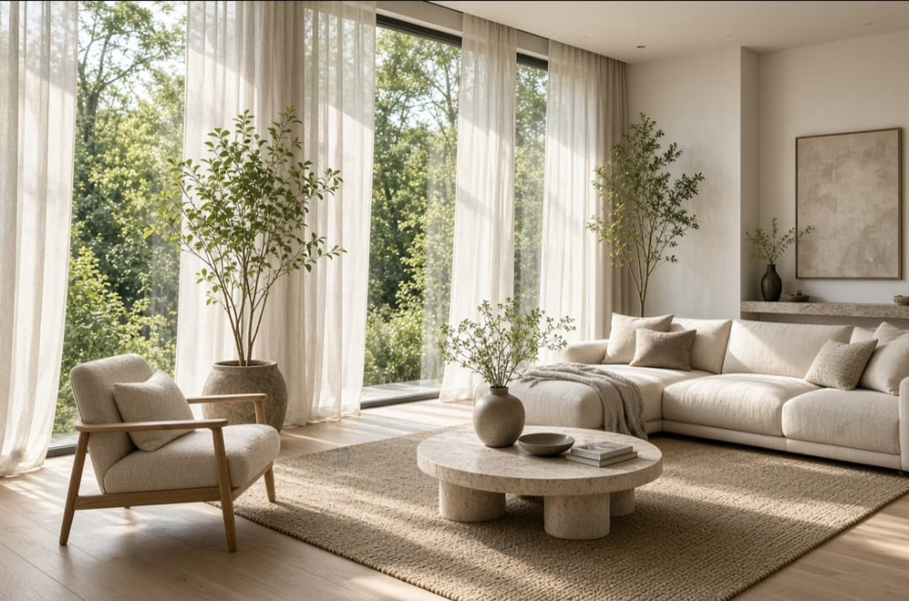
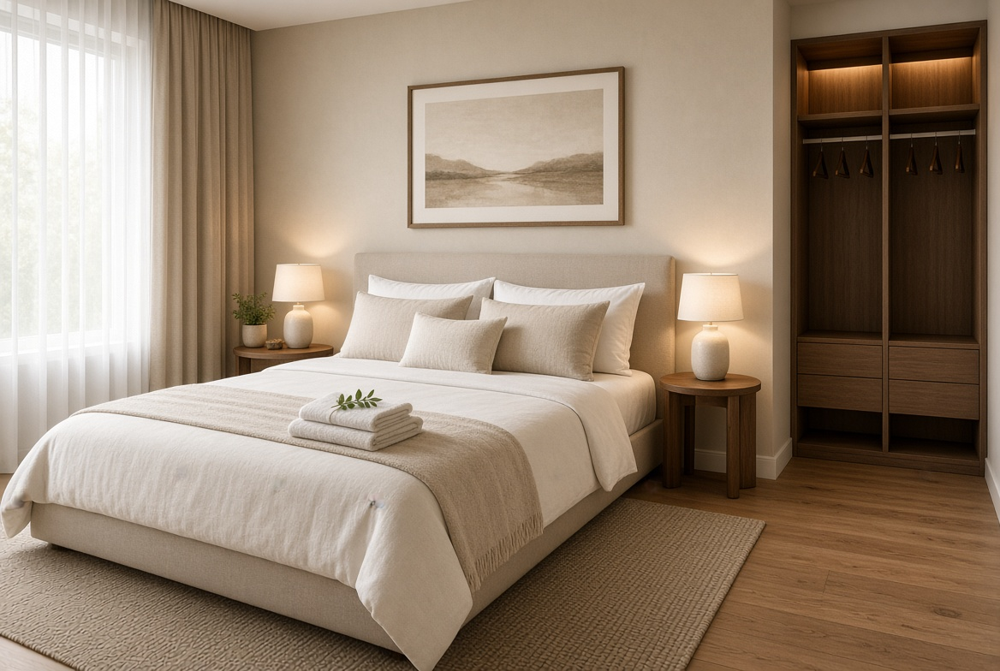

Cómo crear un hogar elegante sin gastar una fortuna
Ideas sencillas para conseguir una casa elegante y equilibrada sin realizar grandes gastos.
Leer artículo →Ideas, consejos y soluciones para decorar la casa con estilo, aprovechar mejor los espacios y crear ambientes acogedores.

Ideas sencillas para conseguir una casa elegante y equilibrada sin realizar grandes gastos.
Leer artículo →
Consejos para distribuir muebles, aprovechar la luz y decorar una sala pequeña sin saturarla.
Leer artículo →
Aprende a combinar colores y crear ambientes coherentes en las diferentes habitaciones.
Leer artículo →